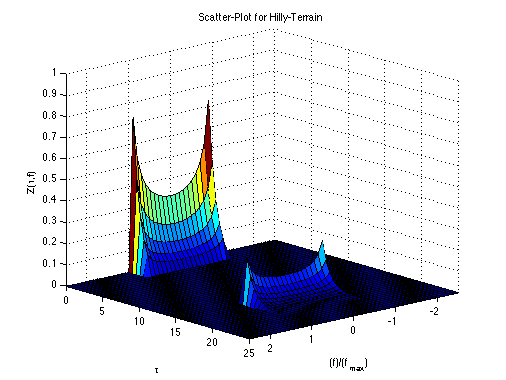

Scatter-Plot for Hilly-Terrain
Copyright 2007 Telecommunications Lab
[fd,t]= meshgrid(-2.5:0.1:2.5,0:.5:25) fd_max=1; f_fd1=fd; for(i=1:1:length(fd)), for(k=1:1:length(fd)), if(abs(fd(i,k))<fd_max), f_fd1(i,k)=(1/pi)*(1/fd_max)/(sqrt(1-(fd(i,k)/(fd_max))^2)); else f_fd1(i,k)=0; end end end; f_fd2=fd; for(i=1:1:length(fd)), for(k=1:1:length(fd)), if(t(i,k)<2.5), f_fd2(i,k)= exp(-t(i,k)); elseif (t(i,k)>15 && t(i,k)<21), f_fd2(i,k)=.5*exp(15-t(i,k)); else f_fd2(i,k)=0; end end end; f_fd=f_fd1.*f_fd2; surf(fd,t,f_fd);axis([-2.5 2.5 0 25 0 1]); xlabel('(f)/(f_{max})');ylabel('\tau');zlabel('Z(\tau,f)'); title('Scatter-Plot for Hilly-Terrain'); grid on; campos([25,155,3])
